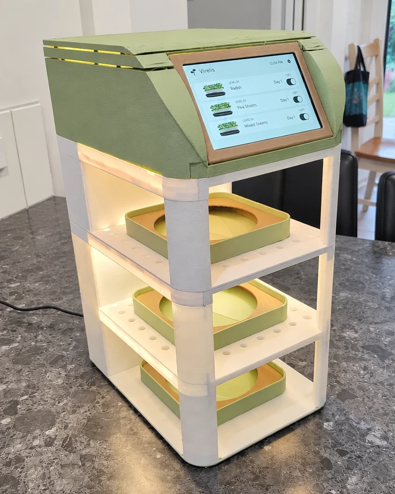

Radish.
Peppery leaves for a sandwich or salad. In a study of 25 microgreens, green daikon radish had the highest vitamin E concentration among the samples tested. [1]
Virelis
A countertop microgreens grower
Virelis is a compact, three-tier countertop microgreens grower, designed to automate watering and lighting. We're developing pre-seeded mats that you can insert into the machine, with support for compatible homemade mats planned too.
We've built the first physical prototype. The growing system, refills and final model features are still being tested; nothing is on sale yet.
Join the Waitlist
Why microgreens?
Snip some over eggs, tuck them into a sandwich or add a handful to a salad. Studies have measured vitamins C, E and K1, plus beta-carotene, in microgreens. The amounts vary a lot by variety. [1]
A few examples to explore — not a confirmed Virelis seed range.
Peppery leaves for a sandwich or salad. In a study of 25 microgreens, green daikon radish had the highest vitamin E concentration among the samples tested. [1]
A sweeter-tasting option to tuck into a wrap. Researchers have also measured vitamin C in pea microgreens grown under controlled conditions. [2]
A splash of purple in a bowl of greens. Red cabbage led the vitamin C measurements in that same 25-variety study. Different leaves bring different things to the table. [1]
We haven't lab-tested a Virelis harvest. Seed variety, light, growing conditions, harvest stage, storage and portion size can change what you eat. These findings aren't a promise of health effects or higher nutrition from the machine, and a small garnish doesn't replace a varied diet.
The November 2026 build
The frame, three growing levels, lights and screen are now together in a physical machine. This photo shows the current build with its trays in place.
You can see the seams and the unfinished details. We'll keep changing those as we work on the tray setup and how it all feels to use.
The image above is the updated design render. It shows the finish we're working towards and how the shelves could look with a grow in each one.

The planned growing routine
Our pre-seeded mats are being developed to take the sowing and measuring out of starting a grow. The plan is one mat on each tier, with the machine handling watering and lighting.
You'll still check the grow, top up water as directed, harvest the greens and clean between cycles. The automatic system and care routine are still being validated.
Leave room in front to get the trays in and out. We'll publish the finished appliance dimensions before launch; the proposed mat size below is not the machine's size.
Planned refills · Not available to buy
The standard format we're planning is nine pre-seeded mats. At one mat per tier, that's three complete growing cycles when you use all three tiers. Packs may mix different microgreen varieties; the range and selection options are still being worked out.
Planned standard pack
NZ$18
Three complete cycles across all three tiers.
Planned larger pack
NZ$32
A larger bundle for keeping refills on hand.
Potential future bulk option
NZ$45
An option we're considering, not a confirmed pack.
All prices are preliminary and in New Zealand dollars. Packs aren't available for purchase, and final pricing and contents may change. A growing cycle here means loading and growing a fresh set of mats, not a promised number of harvests or days.
We're exploring optional deliveries every 4, 6 or 8 weeks, with an ongoing subscriber discount of around 10% compared with one-off packs. Occasional introductory offers may sit alongside that standing discount.
The plan is to make skipping, pausing and cancelling straightforward. You won't need a subscription to operate Virelis: one-off packs and compatible DIY mats are part of the plan too. Intervals, discounts and terms aren't final, and subscriptions aren't open.
We're working towards compact bundles for storage and delivery, using lightweight recyclable cardboard packaging with suitable internal protection for the pre-seeded mats.
Packaging dimensions, storage life and shipping rates haven't been confirmed. We'll publish the tested storage guidance and delivery details before refills go on sale.
Ready-to-grow or homemade
Prefer a mat that's already seeded? That's what our refills are being developed for. Prefer making your own? We're designing Virelis to support compatible homemade seed mats too.
Official refills are intended to be a convenient, tested option, not something you're locked into buying. We'll publish the fit and growing guidelines once validation is complete. Subscriptions will be entirely optional.
About using Virelis
That's part of the plan. We're designing for compatible homemade mats as well as our own pre-seeded refills. The proposed size is 125 × 125 mm; thickness, suitable materials and seed guidance still need validation. It isn't universal compatibility with any mat.
No subscription is planned as a requirement. One-off refill packs and compatible DIY mats are intended alternatives. A future subscription would be an optional convenience, with skipping, pausing and cancellation; it isn't available yet.
Three complete growing cycles when you use all three tiers: three mats per cycle, one on each tier. This doesn't promise a particular harvest size, regrowth or time to harvest.
Shelf life is still being tested. We'll publish storage conditions and a validated storage period before sale, rather than guess how long a pack will last.
Yes, one-off packs are planned alongside the optional subscription. The preliminary pack options aren't available to buy yet.
We're exploring packs with different varieties so you can grow a mixture of crops. The final seed range, pack mixes and whether you can choose each variety are still to be confirmed.
The prototype pictured here has a screen with separate growing levels, a day count and light switches. That doesn't mean every production model will have one. Base and Pro features and controls are still being finalised.
Virelis is being designed to automate both. The water system, lighting routines and refill guidance are still being tested, so we haven't published final settings or maintenance instructions yet.
No. Seeds, water, growing medium and handling can all introduce contamination. Use seeds sold for edible microgreens and clean drinking water, keep hands and harvesting tools clean, and clean trays between grows. Refrigerate harvested greens. These are basic precautions, not a safety guarantee; we'll publish product-specific care instructions before launch. Microgreen food-safety guidance (PDF).
Not yet. We have a physical prototype, but no confirmed price or release date. The mailing list is where we'll share the next build and announce those details when they're settled.
Virelis
Join for development updates on the machine, seed mats and optional refill plans. No purchase or subscription commitment.
Join the Waitlist